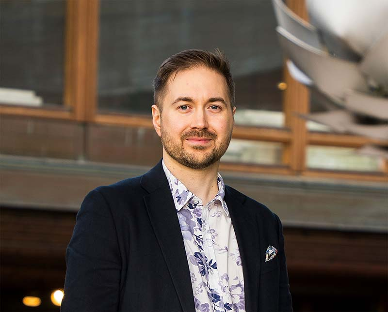

Rakennan turvallisia ohjelmistoja pankissa ja teen päätöksiä kunnanvaltuustossa. Näkemykseni teknologiasta on työn tulos, ei sivusta katsomista.
Lauri Lavanti on johtava ohjelmistokehittäjä pankissa, Kirkkonummen kunnanvaltuutettu ja Vihreän valtuustoryhmän puheenjohtaja. Hän on Aalto-yliopistosta valmistunut informaatioverkostojen diplomi-insinööri ja ajaa digitaalista itsenäisyyttä, yksityisyyden suojaa ja tekoälyn järkevää käyttöä.
Se tulee työstä. Rakennan ohjelmistoja pankissa ja teen päätöksiä kunnanvaltuustossa — kummassakin virheellä on hinta ja luottamus on toiminnan ehto.
Olen johtava ohjelmistokehittäjä, Kirkkonummen kunnanvaltuutettu ja Vihreän valtuustoryhmän puheenjohtaja. Keskityn tekoälyyn, talouteen, yrittäjyyteen ja digitaaliseen itsenäisyyteen. Ne eivät ole erillisiä aiheita: digitaalinen itsenäisyys, yksityisyyden suoja ja tekoälyn vastuullinen käyttöönotto ovat sama kysymys siitä, rakennammeko teknologista kehitystä, joka on yhtä aikaa kilpailukykyistä ja kestävää.
Kunnanvaltuustossa olen nähnyt saman asian toiselta puolelta kuin työssäni: miten päätös, joka näyttää tekniseltä, ratkaisee vuosiksi sen, mihin rahat riittävät. Siksi kirjoitan järjestelmistä, joita olen itse ollut rakentamassa.
Laurista on myös Wikipedia-artikkeli.
Vastaan tiimimme palveluiden teknisestä suunnasta: arkkitehtuurista, teknologiavalinnoista ja siitä kompromissista, joka syntyy nopeuden ja pitkän aikavälin ylläpidettävyyden välille.
Työni keskiössä ovat vaativien kokonaisuuksien suunnittelu, kehittäminen ja ylläpito. Johdan teknisiä linjauksia, rakennan tiimin tekoälytyökaluja ja käyn vuoropuhelua sidosryhmien kanssa, jotta ratkaisut vastaavat todellisia tarpeita ja kestävät aikaa.
Digitalisaatio ei ole minulle vain tekninen kysymys vaan myös yhteiskunnallinen ja eettinen. Huolehdin siitä, että ratkaisut eivät ole toimivia vain tänään vaan myös turvallisia ja ylläpidettäviä huomenna. Suomi on ollut korkean teknologian mallimaa vuosikymmeniä; tekoäly muuttaa työtä, palveluita ja luottamusta digitaalisiin järjestelmiin. Siksi päättäviin asemiin tarvitaan ihmisiä, jotka ymmärtävät teknologiaa käytännön tasolla.
Koska yhteiskunta digitalisoituu jatkuvasti, mutta päätöksenteko ei pysy tahdissa. Tekoälyä koskevat päätökset tehdään nyt, ja ne sitovat Suomea vuosikymmeniksi.
Keskityn tekoälyyn, talouteen ja digitalisaatioon — ja siihen, miten Suomi pysyy kilpailukykyisenä samalla kun yksityisyyden suoja ja digitaalinen itsenäisyys varmistetaan. Tarvitsemme parempaa ymmärrystä teknologian mahdollisuuksista ja riskeistä sekä rohkeutta panostaa koulutukseen ja korkean tuottavuuden kehitykseen.
Tärkeimmät luottamustehtäväni ovat Kirkkonummen kunnanvaltuutettuna ja Vihreän valtuustoryhmän puheenjohtajana toimiminen. Siellä opin, mitä päätös maksaa silloin kun se on jo tehty.
Olen Digitaalinen itsenäisyys -kansalaisaloitteen alullepanija ja pääyhteyshenkilö. Aloite vaatii, että julkishallinnon kriittiset digitaaliset palvelut ja tiedot pysyvät suomalaisten ja eurooppalaisten toimijoiden käsissä — EU/ETA-alueen palvelimilla.
Digitaalinen itsenäisyys tukee eurooppalaista teknologista kehitystä, vähentää riippuvuutta yksittäisistä toimittajista ja luo paremmat edellytykset kotimaiselle ohjelmistokehitykselle. Se ei ole ideologiaa vaan käytännön edellytys toimivalle yhteiskunnalle — ja samalla se vahvistaa demokratiaa ja kansalaisten oikeuksia sekä avaa markkinoita uudelle yritystoiminnalle.
Olen koulutukseltani informaatioverkostojen diplomi-insinööri. Ohjelma rakentuu tietotekniikan päälle mutta laajenee tekniikasta muun muassa estetiikkaan ja filosofiaan.
Koulutus on opettanut katsomaan järjestelmiä sekä teknisinä että inhimillisinä kokonaisuuksina. Se on antanut valmiudet toimia sillanrakentajana ja rakentaa yhteistä ymmärrystä eri ammattiryhmien välille.
Käytännössä se tarkoittaa, että pystyn puhumaan sekä teknisten asiantuntijoiden että liiketoiminnan edustajien kanssa — ja varmistamaan, että he ymmärtävät toisiaan. Tarkastelen teknologiaa aina myös merkitysten, vaikutusten ja vastuullisuuden näkökulmasta.
Vapaa-ajallani keskiössä ovat neljä lastani. Arki koostuu harrastuksista, retkistä ja yhteisistä hetkistä. Vanhemmuus opettaa tunnetaidoista, vuorovaikutuksesta sekä jatkuvan harjoittelun ja kehittymisen tärkeydestä.
Lautapelit, videopelit, kirjallisuus ja joukkueurheilu ovat kulkeneet mukanani pitkään. Ruuhkavuodet rajaavat aikaa, mutta pidän tärkeänä säilyttää tilaa myös näille — joukkueurheilun olen korvannut aktiivisella lenkkeilyllä.
Yksi rakkaimmista harrastuksistani on ollut amerikkalainen jalkapallo, jossa pelasin puolustuksen linjamiestä ja tukimiestä Aalto Predatorsissa ja Helsinki Wolverinesissa. Sain myös edustaa Suomea opiskelijamaajoukkueessa, muun muassa kaikkien aikojen ensimmäisissä yliopistotason MM-kisoissa Uppsalassa.

Kunnanvaltuutettu ja Vihreän valtuustoryhmän puheenjohtaja Kirkkonummella vuodesta 2025. Sitä ennen kolmetoista vuotta lautakunta-, järjestö- ja nuorisovaltuustotyötä.
Kunnanvaltuutettu
Kirkkonummen kunta · 2025–Vihreän valtuustoryhmän puheenjohtaja
Kirkkonummen kunta · 2025–Kuntakehityslautakunnan jäsen
Kirkkonummen kunta · 2025–Puheenjohtaja
Kirkkonummen Vihreät · 2025Toimitilapalvelujen lautakunnan varajäsen
Kirkkonummen kunta · 2023–2025Hallituksen varajäsen
Kirkkonummen Vihreät · 2023–2024Pelastuslaitos-liikelaitoksen johtokunnan varajäsen
Länsi-Uudenmaan hyvinvointialue · 2022–2025Suomenkielisen kasvatus- ja koulutuslautakunnan varajäsen
Kirkkonummen kunta · 2021–2025Perusturvajaoston jäsen
Kirkkonummen kunta · 2021–2022KV-kapteeni
Informaatioverkostojen kilta Athene · 2015Hallituksen puheenjohtaja ja kapteeni
Aalto Predators · 2013–2015Hallituksen jäsen, sihteeri ja viestintävastaava
Aalto Predators · 2013Nuorisovaltuuston hallituksen puheenjohtaja
Kirkkonummen kunta · 2010Olen kehittänyt ohjelmistoja pankkiin, vähittäiskauppaan ja alustoihin vuodesta 2013 — ensin kehittäjänä, sitten teknisen suunnan vastuunkantajana.
Johtava ohjelmistokehittäjä
OP, Helsinki · 2024–Tiimivastaava
Verkkokauppa.com, Helsinki · 2022–2024Ohjelmistokehittäjä
Verkkokauppa.com, Helsinki · 2019–2022Ohjelmistokehittäjä
Gofore, Helsinki · 2019Ohjelmistokehittäjä
Solinor, Helsinki · 2018–2019Ohjelmistosuunnittelija
Zalando, Helsinki · 2017–2018Ohjelmistokehittäjä
Futurice, Helsinki · 2015–2017Ohjelmistokehittäjä
Pulmaton Solutions Oy, Helsinki · 2014Kesäharjoittelija
Nokia Solutions & Networks, Espoo · 2013Informaatioverkostojen diplomi-insinööri Aalto-yliopistosta. Sitä ennen niin kutsuttu kolmoistutkinto: lukio, ammatillinen perustutkinto ja ylioppilastutkinto samanaikaisesti.
Diplomi-insinööri, informaatioverkostot
Aalto-yliopisto, Espoo · 2012–2018Datanomi, informaatioverkostot ja -teknologiat
Omnia ammattiopisto, Kirkkonummi · 2007–2011Ylioppilas
Masalan lukio, Kirkkonummi · 2007–2011Ajankohtaisimmat ajatukseni löydät sosiaalisen median tileiltäni.
Kirjoituksiani löydät näiden sivujen lisäksi lehdistä.
Analyysejä teknologian ja talouden kehityskuluista sekä arvioita niiden vaikutuksista yhteiskuntaan.
Voit perua uutiskirjeen koska tahansa. Lisätietoja: tietosuojaseloste.